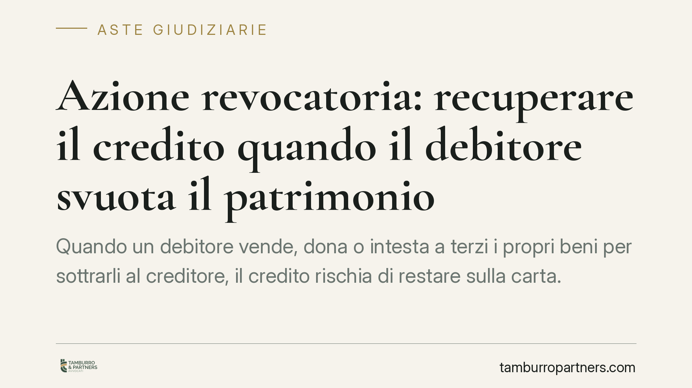

Azione revocatoria: recuperare il credito quando il debitore svuota il patrimonio
Quando un debitore vende, dona o intesta a terzi i propri beni per sottrarli al creditore, il credito rischia di restare sulla carta. Il codice civile offre uno strumento preciso: l'azione revocatoria. Consente di rendere inefficaci quegli atti e recuperare la garanzia patrimoniale, aprendo la strada al pignoramento e all'asta giudiziaria.

Il principio: il patrimonio come garanzia del credito
Ogni creditore ha un punto fermo su cui contare: l'articolo 2740 del codice civile stabilisce che il debitore risponde delle proprie obbligazioni con tutti i suoi beni, presenti e futuri. È la cosiddetta garanzia patrimoniale generica.
Questo principio, però, viene svuotato quando il debitore si "spoglia" dei beni: vende l'immobile a un prezzo di favore, lo dona a un familiare, lo intesta a una società compiacente. L'obiettivo è chiaro: presentarsi nudo davanti al creditore che bussa.
Proprio per neutralizzare queste manovre esiste l'azione revocatoria, disciplinata dall'articolo 2901 del codice civile.
Cosa è l'azione revocatoria
L'azione revocatoria (o "pauliana") permette al creditore di chiedere al giudice di dichiarare inefficace nei suoi confronti l'atto con cui il debitore ha disposto dei propri beni.
Attenzione al termine: l'atto non viene annullato in assoluto e non torna nel patrimonio del debitore. Diventa semplicemente "come se non esistesse" per il creditore che ha agito. In concreto, quel creditore potrà pignorare il bene anche se, formalmente, appartiene ora a un terzo.
Per ottenere la revocatoria servono tre presupposti:
- L'esistenza del credito, anche se non ancora accertato con sentenza definitiva.
- L'eventus damni: l'atto deve arrecare un pregiudizio concreto alle ragioni del creditore, rendendo il patrimonio insufficiente o più difficile da aggredire.
- La consapevolezza del pregiudizio (in gergo, *scientia* o *consilium fraudis*). Se l'atto è a titolo oneroso, come una vendita, occorre dimostrare che anche il terzo acquirente sapeva di danneggiare il creditore. Se l'atto è a titolo gratuito, come una donazione, basta la consapevolezza del debitore.
Atti anteriori e atti successivi al credito
La disciplina distingue in base al momento in cui è sorto il credito.
Se l'atto di disposizione è successivo al sorgere del credito, è sufficiente la consapevolezza del pregiudizio. Se invece è anteriore, la legge chiede una prova più rigorosa: l'atto deve essere stato compiuto con dolosa preordinazione, cioè studiato in anticipo proprio per frodare un credito futuro.
È una differenza tutt'altro che teorica: incide direttamente sull'onere della prova e sulla probabilità di successo dell'azione.
Il termine di prescrizione
L'azione si prescrive in cinque anni dalla data dell'atto (art. 2903 c.c.). È un termine da non sottovalutare: chi tarda a reagire rischia di perdere lo strumento più efficace contro le manovre di spoliazione. Consigliamo di monitorare con attenzione i movimenti patrimoniali del debitore fin dai primi segnali di insolvenza.
Il collegamento con l'esecuzione immobiliare
La revocatoria non è fine a se stessa. È il presupposto per aggredire il bene: una volta ottenuta la sentenza che dichiara inefficace l'atto, il creditore può procedere al pignoramento del bene rimasto formalmente in capo al terzo e portarlo all'asta giudiziaria.
Spesso è utile abbinare all'azione una trascrizione della domanda giudiziale nei registri immobiliari: rende opponibile la pretesa anche a chi dovesse acquistare il bene dal terzo nel frattempo, evitando la catena di passaggi che rende il patrimonio irraggiungibile.
Cosa fare in concreto
- Verifica subito la situazione patrimoniale del debitore: richiedi visure catastali e ipotecarie per individuare vendite, donazioni o intestazioni sospette.
- Non attendere la sentenza sul credito: l'azione revocatoria può essere avviata anche in pendenza dell'accertamento del credito. Il fattore tempo è decisivo.
- Ricostruisci la data e la natura dell'atto (oneroso o gratuito, anteriore o successivo al credito): da questo dipende cosa dovrai provare.
- Trascrivi la domanda giudiziale per bloccare ulteriori trasferimenti a terzi in buona fede.
- Fatti assistere prima di agire: la revocatoria richiede una strategia probatoria costruita sui documenti. Un'azione impostata male può pregiudicare il recupero.
Un'ultima avvertenza
Lo spoglio dei beni può integrare anche profili penali, come la sottrazione fraudolenta al pagamento di imposte o, in ambito esecutivo, condotte rilevanti verso il ceto creditorio. Ogni caso va valutato singolarmente, incrociando il dato civilistico con eventuali risvolti penali.
---
*Contributo informativo a cura di Tamburro & Partners - Avv. Giuseppe Tamburro. Non costituisce parere legale.*
Comprare bene all’asta si può.
Se vuoi acquistare un immobile all’asta in sicurezza o difendere un esecutato, scrivi allo studio. Ti rispondiamo entro un giorno lavorativo.